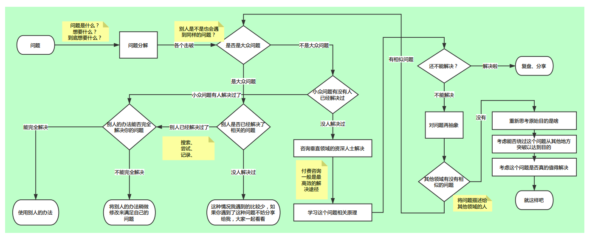

上面这张图是我在之前的工作中总结了一套解决问题的思路，可以解决自己在工作中遇到的大部分问题（可以说我解决的都是些普普通通的问题，迄今为止我并没有遇到过什么大问题..），这套思路将随着将来的思考继续优化改进，先总结一下，后面用一些实际的例子来演示一下这套思路的用法。
问题是什么
把问题问清楚，是最基本的能力。
遇到问题，先要弄清楚问题是什么，如果连问题都描述不清楚，自己肯定解决不了，别人也帮不了你。
把问题写到纸上！
问题分解
弄清楚问题的过程，也是问题分解的过程。
一个大问题，要分步骤解，不要想着一口吞下去。把问题分解成一个个小问题，然后一一击破。
把步骤写到纸上！
是否是大众问题
一个问题自己解决不了，我首先不是去想着去研究它的原理，而是这个问题是不是一种大众场景。我遇到的绝大多数问题，站在一个高手的角度看，都不是问题，也就是说我遇到的问题，都是别人已经解决过的问题了，最简单的办法就是拿来用！
别人是否已经解决了相关问题
这一步需要掌握搜索引擎的用法，一来要能访问Google，二来是问题关键字的提取。
面向Google编程，就是这个意思…很多问题，只要熟练掌握上面两项技能，都能很快解决掉。
别人的办法能否完全解决你的问题
尝试！
要多尝试，代码拷下来跑一遍看看。但不要指望代码拿过来就能用，一定要大概弄清楚代码的意思再运行，然后稍作改动，一般就能解决问题了。
如果是小众问题呢
小众问题，比如一款很小众的软件出了问题，这款人家很少有人用，这样就很难查到解决方法了。不管怎样，搜索引擎还是要搜一把，如果恰好有人解决了这个问题呢～如果没有人解决过，首先要想想看周边有没有人可能遇到同样的问题，去问问那些踩过坑的人，他们经验丰富或许可以帮上忙；如果身边没有这样的人，找一些专业的人或者专业的地方，付费提问总是最高效的办法；实在没人帮你了，你可以考虑研究下这个问题的原理并尝试解决它，然后将解决思路分享给大家。
对问题再抽象
如果你学习了原理还是无法解决这个问题，可以考虑下这个问题，在其他领域有没有类似的问题。比如2013年左右想在Android实现图片识别，需要自己开发很多东西才能完成，以我的能力是解决不了的，而且这个问题在当时也属于小众需求。我想了想，图片识别在PC领域是很常见的需求了，于是我就按照PC上skuli软件的做法自己模仿着做了个简单版的Android图片识别工具。
所以，多接触些技术，多看些技术新闻，多跟人交流，总会有收获的。
还是解决不了？
费了九牛二虎之力还是没搞定，可能需要思考一下自己的目的，能否从其他途径解决，曲线救国的道理。
或者，再仔细想一想，这个问题是不是真的有必要花这么多时间解决。